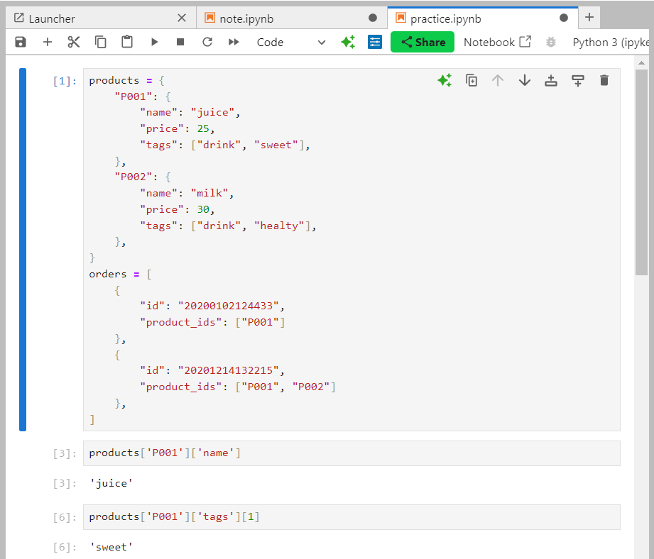
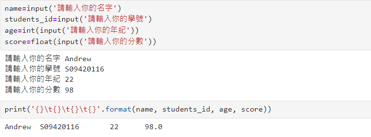
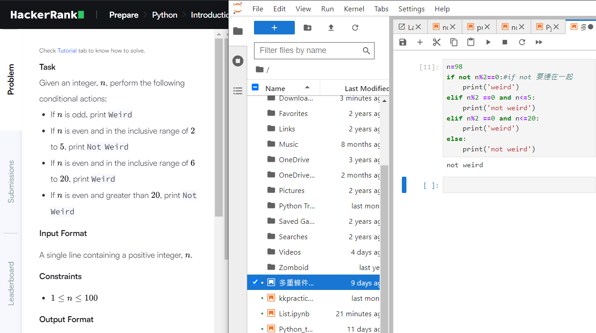
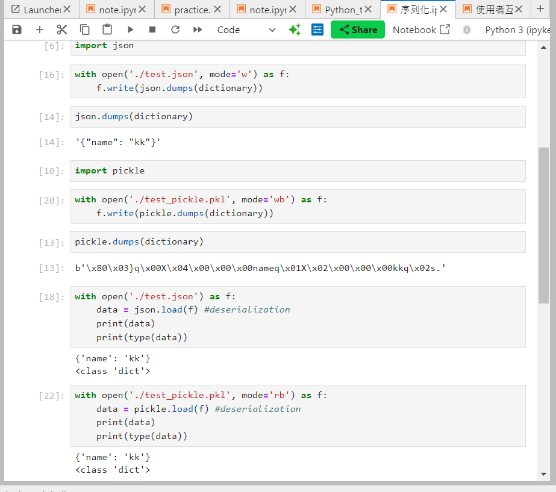
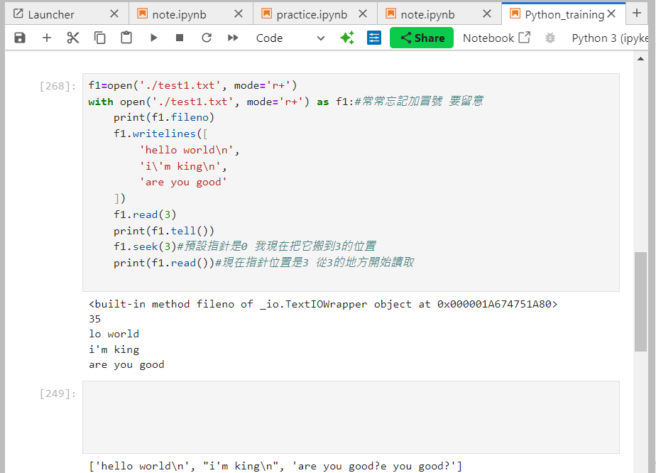
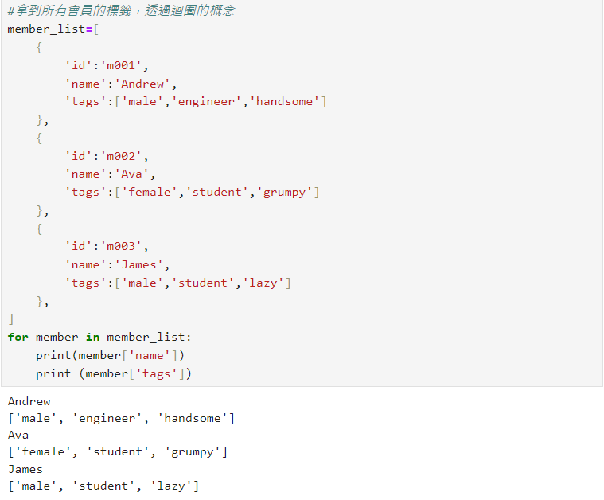

- 目錄:
- 個人簡介
- 學習經驗與作品
- 時間投入
- 如何確定投入的領域是有回報的?
- 負面情緒的經驗
- 開發網頁時的心得
- 社會群體的連結
- 其他建議
1.個人簡介和申請動機
您好，我是劉昇憲。今年剛剛畢業於東海大學國貿系，畢業之後曾經任職於補教業的電銷顧問專員
我是一個喜歡透過自我學習找尋答案的人。之前有留學歐洲的經驗，在歐洲習慣了PBL的學習方式，傾向透過實作來尋找問題的答案跟方法，因此相較於傳統手把手教學來說，我大大認同WeHelp這種專案式導向的學習方式(自己去尋找答案的模式)。
我的申請動機:
我是一個喜歡透過自我學習找尋答案的人。之前有留學歐洲的經驗，在歐洲習慣了PBL的學習方式，傾向透過實作來尋找問題的答案跟方法，因此相較於傳統手把手教學來說，我大大認同WeHelp這種專案式導向的學習方式(自己去尋找答案的模式)。
我的申請動機:
- 希望可以在未來成功轉職成為軟體工程師(個人認為這項職缺是硬需求)
- 對於網站前後端以及AI人工智慧領域有濃厚興趣
- 目前時間投入較有餘裕
- 收費跟學習模式符合個人需求
- 也有透過彭彭老師網路上的免費課程去打好基礎(受益良多 真心感謝XD)
2.學習經驗與作品集
| 作品名稱 | 示意圖 |
| 會員資料的建構練習 |

|
| 使用者互動 |

|
| 多重條件判斷 |

|
| 檔案序列化練習 |


|
| 迴圈練習 |

|
3.時間投入
目前已經完成離職手續，每天平均投入6hr自我學習網站開發
4.確定選擇投入的領域是正確有回報的
- 其為硬需求，104上面有超過2000職缺。網站仍然是企業建立數字存在的基礎工具
尤其是在電子商務、線上教育、和數字行銷等領域，需求穩定且增長潛力大。 - 能夠結合科技趨勢。例如:AI、區塊鏈技術、物聯網等等。
- 本身熱愛學習新技術和耐心解決問題(能夠堅持我完成專案的動力)
- 網站開發技術能應用於其他領域（如全端開發、應用程式開發、API設計），對職業生涯有持續增值加分的作用。
- 因為學習是有分階段性的(模仿學習、指導學習、獨立學習)。學習網站開發之後，不僅幫助幫助我適應當下的技術需求，還能培養快速掌握新技術的能力。
- 網站開發可以帶來多種收入來源，如自由接案、建站服務、模板銷售等等。
5.負面情緒的經驗
之前在西班牙時，曾經修習商業心理學，當時參加了一個商業競賽(情況是要猜測對手的談判價格，並且最終獲利須大於對手隊伍)。當時發生了跟國外同伴意見相左的狀況，而跟同伴討論了好幾次也都沒有一個共識。後續我透過對方的文化跟價值觀切入，去做換位思考後，加上後續透過不斷地跟老師的mentor跟討論之後，慢慢了解了同伴的訂價決策，也學會了傾聽別人的意見。
6.開發網站的心得
一開始跟python的語法真的蠻不一樣。目前網站開發也停留在比較基礎的階段，謝謝彭彭老師在youtube提供大量免費的素材可以讓我打好基礎。更棒的是，在每部影片的後面，還可以跟著實作看看，老實說真的蠻有成就感的(學習就是應該輸出>輸出)。但是學習到後來的確就像您說的，這個領域易學難精，只能透過這段過渡期去不斷精進自己的專案經驗跟實作技能，才能在未來做好就職的準備
7.與社會群體的連結
- 提供資訊與資源: 網站開發能夠滿足不同社會群體的資訊需求，例如教育、醫療、法律、求職等等...
- 提供社群互動: 例如:論壇、社交平台、留言板
- 支持弱勢群體與倡導平等: LGBTQ友善網站、殘疾人士網站
- 推動經濟與商業活動發展
- 縮短距離與時間差距
8.其他建議